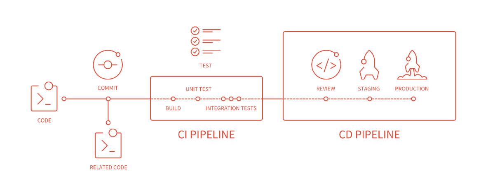
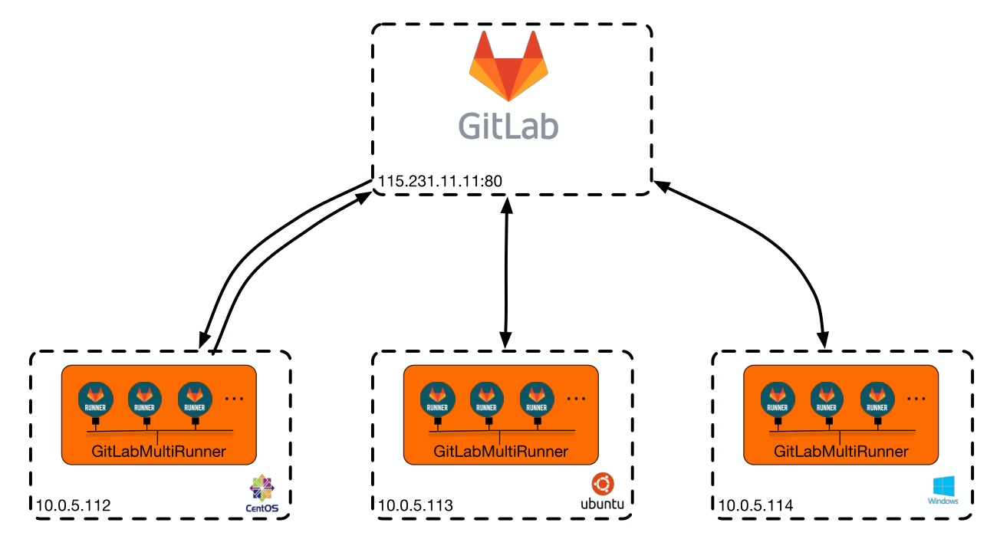
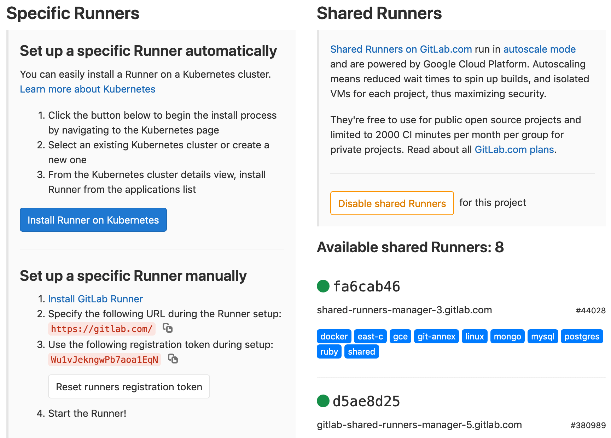

一、什么是GitLab CI ？
GitLab-CI是一套配合GitLab使用的持续集成系统（类似的还有Jenkins、Github Actions），从GitLab 8.0后就默认集成了GitLab-CI，并且所有项目默认启用，只要在项目仓库的根目录添加 .gitlab-ci.yml 文件，并且配置了Runner，那么每一次MR / push 都会触发CI Pipeline 。
二、什么是GitLab WorkFlow ？

三、GitLab相关术语
1.什么是PipeLine ?
一次构建任务，流水线，包含多个Stage，比如build、test、deploy
2.什么是Stage ?
构建阶段，默认有三个：build阶段（安装依赖、编译）、test阶段（单元测试、集成测试）、deploy阶段（部署到d/q/p环境）。可以在Pipeline中定义多个Stage，和Pipeline的关系如下：1
2
3
4
5
6
7
8
9+--------------------------------------------------------+
| |
| Pipeline |
| |
| +-----------+ +------------+ +------------+ |
| | Stage 1 |---->| Stage 2 |----->| Stage 3 | |
| +-----------+ +------------+ +------------+ |
| |
+--------------------------------------------------------+
特点：
- 所有 Stages 会按照顺序运行，即当一个 Stage 完成后，下一个 Stage 才会开始
- 只有当所有 Stages 完成后，该构建任务 (Pipeline) 才会成功
- 如果任何一个 Stage 失败，那么后面的 Stages 不会执行，该构建任务 (Pipeline) 失败
3.什么是Job ?
在Stage中执行的工作，是执行具体的指令集合，只负责一件事情，和Stage的关系如下：1
2
3
4
5
6
7
8
9+------------------------------------------+
| |
| Stage 1 |
| |
| +---------+ +---------+ +---------+ |
| | Job 1 | | Job 2 | | Job 3 | |
| +---------+ +---------+ +---------+ |
| |
+------------------------------------------+
特点：
- 相同 Stage 中的 Job 会并行执行
- 相同 Stage 中的 Job 都执行成功时，该 Stage 才会成功
- 如果任何一个 Job 失败，那么该 Stage 失败，即该构建任务 (Pipeline) 失败
4.什么是GitLab-Runner ?（参考）
Job的实际执行者。GitLab CI浏览项目里的.gitlab-ci.yml文件，根据里面的规则，分配到各个Runner来运行相应的Job，同一时间单个 Runner 只能处理一个 Job。
分类：
按类型：Specific Runner 和 Shared Runner 。Specific Runner 只能供部分项目使用，而Shared Runner 是所有开启了Allow shared runners选项的项目都可以使用的。
按状态：Active Runner、Paused Runner

5.什么是.gitlab-ci.yml文件 ？
项目根目录下的CI配置文件，记录了Pipeline中的阶段和执行规则，可以为不同分支配置不同的规则1
2
3
4
5
6
7
8
9
10
11
12
13
14
15
16
17
18
19
20
21stages: // 首先按顺序定义有几个步骤。步骤下面的所有job是同步执行的
- test
- build
job1:
stage: test // 属于test的stage
script:
- npm run test // 这个job执行的脚本
only:
- master // 只监听master分支的代码提交
tags:
- tengxun // 要使用哪个runner
job2:
stage: build
script:
- npm run build
only:
- master
tags:
- tengxun
四、安装 GitLab Runner (https://docs.gitlab.com/runner/)
1.添加官方rpm源
1 | # For RHEL/CentOS/Fedora |
2.安装
1 | # For RHEL/CentOS/Fedora |
3.注册（https://docs.gitlab.com/runner/register/index.html）
a.获取注册用的 url和token：project -> settings -> CI/CD -> Specific Runner

b.执行注册程序1
2
3
4
5
6
7
8
9
10
11
12
13
14
15
16sudo gitlab-runner register
Please enter the gitlab-ci coordinator URL (e.g. https://gitlab.com )
https://gitlab.com
Please enter the gitlab-ci token for this runner
xxx
Please enter the gitlab-ci description for this runner
[hostname] my-runner
Please enter the gitlab-ci tags for this runner (comma separated):
my-tag,another-tag
Please enter the executor: ssh, docker+machine, docker-ssh+machine, kubernetes, docker, parallels, virtualbox, docker-ssh, shell:
shell
关于executor: https://docs.gitlab.com/runner/executors/README.html#compatibility-chart
五、编写.gitlab-ci.yml文件（https://segmentfault.com/a/1190000010442764）
1 | stages: |
六、GitLab-CI的优势
1.和GitLab集成，功能集成度较高
2.界面美观，结果直接展现在GitLab页面上，直观清晰
3.无需复杂配置，上手容易
七、遇到的问题
1.GitLab-runner 权限修改
解决：
- 目录增加对应权限
- 将gitlab-runner user添加到root群组
- 更改执行用户为root(http://www.fidding.me/article/111)
2.GitLab-runner拉取代码失败
1 | Running with gitlab-runner 12.3.0 (a8a019e0) |
解决：升级Git1
2
3
4
5
6
7
8# centos 6
yum install http://opensource.wandisco.com/centos/6/git/x86_64/wandisco-git-release-6-1.noarch.rpm
# centos 7
yum install http://opensource.wandisco.com/centos/7/git/x86_64/wandisco-git-release-7-1.noarch.rpm
yum install –y git
git --version